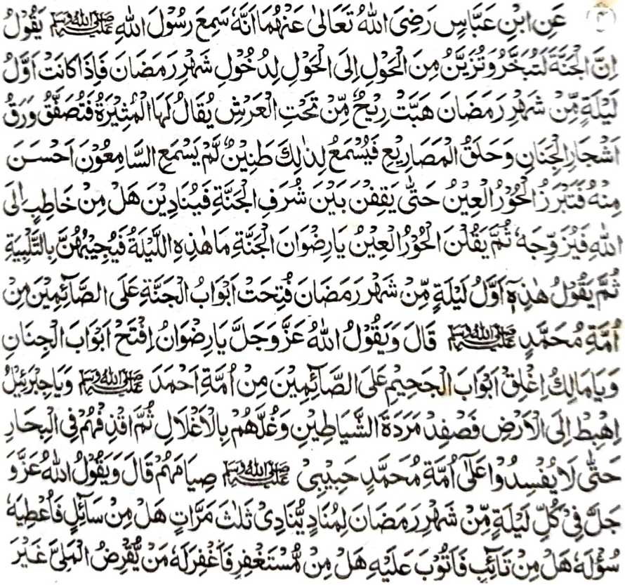
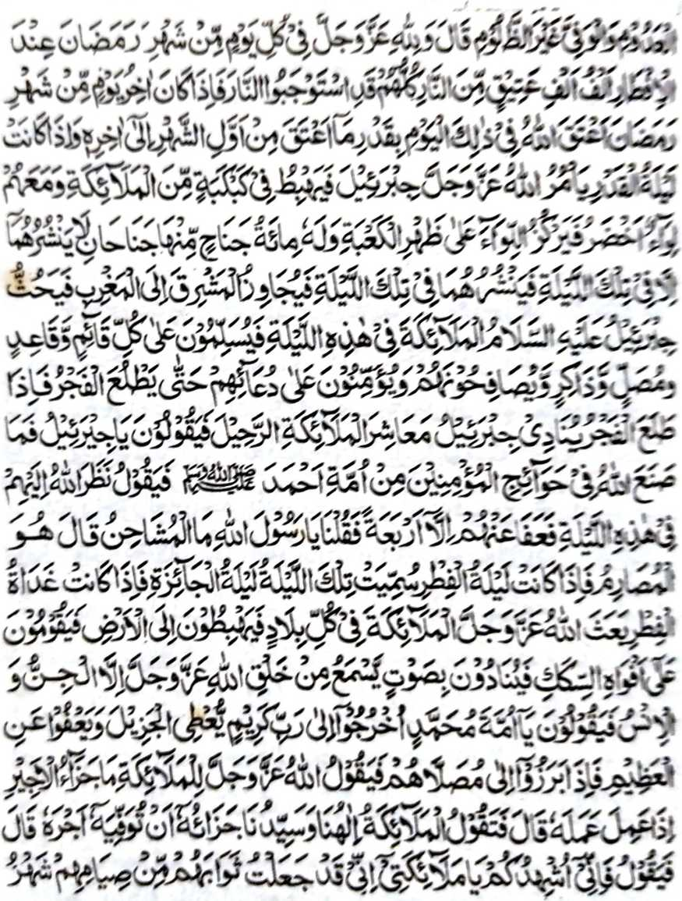
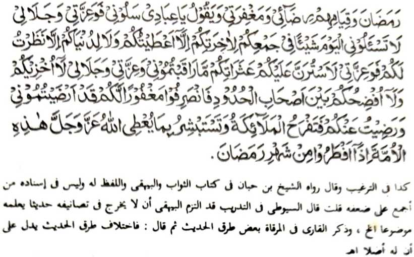
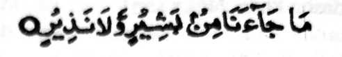
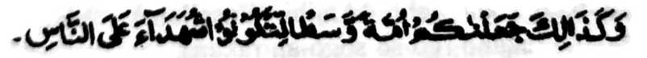
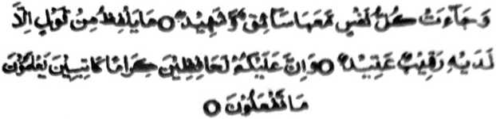
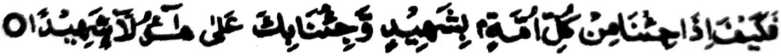
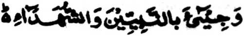
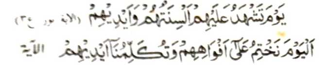

Hadith 4



Miyakathitayan ko Ibn ‘Abbas (Radhiallaho Anhoma) a mata-an a miyaneg iyan so Rasulollah (Sallallaho Alaihi Wasallam) a gi-i niyan tharo-on: “Mata-an a so Sorga na gi-i khamotan go gi-i pharasan ko melilibeta-on ko kaphakasoled o olan-olan a Ramadhan. Anda den-i paganay a kagagawi-i ko olan-olan a Ramadhan na tomoron angkoto a ‘endo a pho-on ko kababa-an o 'Arsh. Aya ingaran niyan na so Al-Muthirah na gi-i niyan mapakathetebala so manga ra-on o manga kayo ko Sorga go manga kaka-og so manga pinto na makazowara sa mapiya a boni-boniyan a da den maneg o phakanegon sa kapiya. Na merorongaw so manga roronok-i kailay a manga Midadari si-i ko pagelet-letan o manga tomara ko Sorga a gi-i ran ipananawag: 'Ba aden a gi-i mamangeni ko Allah (Subhaanaho Wa Ta’ala) a mapangaroma kami niyan?’ Oriyan niyan na tharo-on o manga Midadari ko [Mala-ikat]: ‘Hay Ridhwaan a Tomitikay ko Sorga! Antona-a angka-iya a kagagawi-i?’ Isembag iyan kiran [sa gi-i niyan tharo-on so]: ‘Labbaik (Kati-i ako)!’ Oriyan niyan na tharo-on niyan: ‘Imanto so paganay a kagagawi-i ko olan-olan a Ramadhan a peleka-an so manga pinto o Sorga ko manga barapowasa ko Ummat o Muhammad (Sallallaho ‘Alaihi Wasallam)’. ” Miyatharo iyan pen: “Na tharo-on o Allah (Subhaanaho Wa Ta'ala) a Lebi a Mabager ago Maporo: ‘Hay Ridhwaan! Leka-i ngka so manga pinto o Sorga! Go Hay Maalik! Lekhebi ngka so manga pinto o [Naraka] Jahannam ko manga barapowasa a ped ko Ummat o Ahmad (Sallallaho ‘Alaihi Wasallam)! Go Hay Jibrael! Na toron ka ko lopa na pamatonga ngka so manga Shaitaan go rantay ngka siran na tago-a ngka siran ko manga ragat ka an niran di khabinasa-i so Ummat o Muhammad a pekhababaya-an Aken (Sallallaho ‘Alaihi Wasallam) ko gi-i ran kapamowasa.” Pitharo iyan [a Rasulollah (Sallallaho ‘Alaihi Wasallam)]: “Go tharo-on pen o Allah (Subhaanaho Wa Ta’ala) a Lebi a Mabager ago Maporo ko oman gagawi-i ko olan-olan a Ramadhan ko Mala-ikat a phananawag a itawag iyan sa makatelo: ‘Ba aden a phamangeni ka an non mibegay so phangenin niyan? Ba aden a pethaobat ka aden mapakataobat? Ba aden a phamangeni sa ma-ap ka aden kama-api? Antawa-ai aden a tamok a phagotangen niyan si-i Rekaniyan a aden a [lebi a mala a] tamok Iyan a di pepharempes go Phamayad a di phangorang?’’’ Pitharo iyan [peman a Rasulollah (Sallallaho ‘Alaihi Wasallam)]: “Go so Allah (Subhaanaho Wa Ta’ala) a Lebi a Mabager ago Maporo na si-i ko oman gawi-i ko olan-olan a Ramadhan ko masa a ilalapis na pephaka-awaan Niyan so sanggibo-nggibo [isa ka million a manga niyawa] ko Apoy a siran langon na sabenar a miyapatot kiran so Apoy [ko Naraka] na amay ka mori-pori a gawi-i ko olan-olan a Ramadhan na pakaliyon o Allah (Subhaanaho Wa Ta'ala) ko Naraka sangkoto a gawi-i so [manga tao a aya] kadakel iran na lagid o miyaka-awa ko Apoy ipho-on ko paganay a gawi-i taman ko mori a gawi-i niyan na amay ka Kagagawi-i o Lailatul Qadr na sogo-on o Allah (Subhaanaho Wa Ta'ala) a Lebi a, Mabager ago Maporo so Jibra'el ('Alaihis Salaam) ago so sagorompong a Mala-ikat a tepad siran [sa donya] na awid siran sa pandi a gadong na pakatindega iran sa poro a Ka'abah go aden a manga papak iyan a mogatos a pedon so dowa a papak a aya bo a kapemboyanga niyan non na igira layidonan a kagagawi-i, na boyangen niyan si-i sangka-iya a kagagawi-i na matikop iyan ipho-on sa sebangan taman sa sedepan na botawanan o Jibra'el (‘Alaihis Salaam) so manga Mala-ikat sangka-iya kagagawi-i na salaamen niran so omani [tao a] tomitindeg [sa simba] go so khi-oontod go so gi-i manambayang go so gi-i Dhikr go phagamongen niran go pethawakiden niran a 'Aamin so manga pangeni ran taman sa somebang so Fajr na anda den-i kasebang o Fajr na tawayen o Jibra'el (‘Alaihis Salaam) so manga Mala-ikat: ‘Awa kano san den! Awa kano san den!’ Na tharo-on niran; ‘Hay Jibra’el (Alaihis Salaam)! Antona-ai ikhidi-a o Allah (Subhaanaho Wa Ta’ala) ko manga singanin o Miyamaratiyaya a ped ko Ummat o Muhammad (Sallallaho Alaihi Wasallam)?’ Na isembag iyan: ‘Miya-ilay siran o Allah (Subhaanaho Wa Ta’ala) sangka-iya Kagagawi-i na miya-apan Niyan siran inonta so pat [a da kama-api].’” Na miyatharo ami: ‘Antawa-a siran Ya Rasulollah (Sallallaho ‘Alaihi Wasallam)?” Miyatharo iyan: “So mama a tala-inom sa Arak, go so mawaraw sa mbala a lokes iyan, go so tomiyolak sa tonganay niyan, go so mari-it.” Miyatharo ami, “Ya Rasulollah (Sallallaho ‘Alaihi Wasallam)! Antawa-ai mari-it?”Miyatharo iyan: “Sekaniyan so mababaya manolak.’’ Amay ka kagagawi-i ko kamboka na ibetho sangkanan a gagawi-i so kagagawi-i a kambalasa. Si-i ko kapita-pita ko boka na tago-an o Allah (Subhaanaho Wa Ta’ala) a Lebi a Mabager ago Maporo so omani darepa (sa Mala-ikat) na tomoron siran ko lopa na tomindeg siran ko omani lalan ago manga okita sa pananawag siran sa lago a pekhaneg o langon o ka-aden o Allah (Subhaanaho Wa Ta’ala) a Lebi a Mabager ago Maporo inonta bo so manga Jinn ago so manga Manosiya a gi-i ran tharo-on: ‘Hay manga Ummat o Muhammad (Sallallaho ‘Alaihi Wasallam)! Song kano ko Kadenan a Malimo, a Phamegay sa balas ago Merila sa manga ala a dosa. Na amay ka matimo siran ko pezambayangan niran na tharo-on o Allah (Subhaanaho Wa Ta’ala) a Lebi a Mabager ago Maporo ko manga Mala-ikat: ‘Antona-ai balas o gomagalebek ko masa a kapasada niyan ko galebek iyan?’ Tharo-on o manga Mala-ikat: ‘Kadenan nami go Datu ami, aya balas iyan na so kibegan non ko sokay niyan. ’Na tharo-on Niyan: ‘Mata-an a Saken na pakapezakesi-in Ko sekano, Hay manga Mala-ikat Aken! Mata-an a Saken na inisenggay Aken a balas iran so kasoso-at Aken go so Rila Aken pho-on ko kiyapamowasa iran ko olan-olan a Ramadhan go so kinitindegen niran ko simba.’ Go tharo-on Niyan: ‘Hay manga oripen Aken! Pangeni kano Raken! Ibet ko Kabager Aken go so Kaporo Aken ka da den a pangenin niyo Raken si-i, sangka-iya a gawi-i a kalilimod iyo pantag ko Akhirat iyo ba Ko rekano di began, go da a [pangenin niyo pantag ko] donya iyo a ba Ko rekano di began sa, [okit a] kapiya niyo, go ibet ko Kabager Aken! Ka sapengan aken so manga, pa-awing iyo ko tenday o kapephangongonotan niyo Raken, go ibet ko Kabager Aken! Go so Kaporo Aken! Ka di Aken sekano den pakadapanasen go di Aken sekano den kowa-an a diyaman ko hadapan o manga Malawani ago so manga Miyongkir. Sa mbabaling kano den pho-on si-i a kiyarila-an kano ka sabenar a miyaso-at Ako niyo na miyaso-at Ako rekano.' Na mababaya so manga Mala-ikat ago makapiya ginawa iran ko nganin a inibegay o Allah (Subhaanaho Wa Ta’ala) a Lebi a Mabager ago Maporo sangka-iya Ummat ko masa a kaboka iran ko olan-olan a Ramadhan.’’
OSAYAN
So miyanga-oona a manga lekatan angka-iya kitab na miyapagosay niyan so kadakelan ko matatago sangka-iya a matas a Hadith. Aden a pira timan a ‘enda-o a taralebi a kabegan sa inengka. Miya-ilay tano si-i a pira barang a manga tao a miyapapas kiran so kalangkapan a rila si-i ko Ramadhan go tanto a kiyawis-wisan sa da a miyambagi-an niran apiya si-i ko kapipita ko 'Eid. Ped si-i so manga tao a miyakambobono ago so manga tao a pezopaken niran so mbala a lokes iran. Khapakay a i-iza kiran phiya-piya o tao: ‘Da niyo maso-at so Allah (Subhaanaho Wa Ta’ala), na sabap ko kiyasogoka niyo san, na antona-ai ped a khilidas iyo?" Tanto a gi-i kharata a ginawa tano, misabap ko [kiyada o] laba sa donya ago so bantogan, na miya-baloy niyo a ginawa niyo a kiya-antapan o paninta o Rasulollah (Sallallaho ‘Alaihi Wasallam) go so Jibra’el (‘Alaihis Salaam), na misasareta-on pen a miyapapas kano ko rila a inibegay o Allah (Subhaanaho Wa Ta’ala). Khapakay a maparoli niyo so di tatap a kapakataban ko rido-ai niyo ago makakowa kano sa maito a bantogan ko donya, ogaid na giyangka-iya di tatap a kapakalaba na da a kinggay niyan a gona amay ka so paninta o Rasulollah (Sallallaho 'Alaihi Wasallam) na mibabatog rekano, a tiyawakid a ‘Aameen o Jibra'el ( 'Alaihis Salaam), go da rekano mapatot so rila ago limo o Allah (Subhaanaho Wa Ta’ala). Pangenin aken rekano a khisesela-an a manga pagari aken ago manga babay aken, a pamimikirana niyo so mambebetad iyo pasin go taregen niyo so gi-i niyo kambobono. Aden pen a oras a kaompiya-i ko ola-ola ago thaobat kano den imanto. Mapita na phakatindeg kano ko hadapan o Phangokom, a si-i sa Hadapan Niyan na da a pangkatan, da a bantogan, da a kadato ago da a tamok a ba rekano phaka-ogop -Phangokom a si-i sa Hadapan Niyan na so bo so ‘Amaal iyo na ayabo khi-itong ago Sekaniyan so lebi a mata-o ko manga ola-ola niyo. Tatademi niyo a so Allah (Subhaanaho Wa Ta’ala) na khapakay a irila Iyan so di tano kaphakatarotop ko kindodolona-an tano Ron ogaid na di Niyan iperila, o da a kasala-an, so dosa tano ko manga ped tano a manosiya.
So Rasulollah (Sallallaho ‘Alaihi Wasallam) na miyatharo iyan: “Aya tanto a miyalapis ko manga ummat aken na so tao, a phakatindeg ko Alongan a Qiyamah, a ma-awid sekaniyan sa manga pipiya Amaal lagid o Sambayang, go so Powasa, go Zakat; ogaid na kiyazinta-an niyan so isa tao, kiyatakayan niyan so isa tao sa di benar, go kiyapakasakitan niyan so isa peman, sa aya miyanggola-ola na so manga ‘Amaal iyan a mapiya na miyada rekaniyan na minibegay ko piyangabibinasa-an niyan. Amay ka malengan so manga pipiya ‘Amaal iyan ko lagida-i a okit, na so peman so manga dosa iran na si-i rekaniyan peman mibegay (amay ka di niyan katarotopan sa bayad a mapiya ‘Amaal so kasala-an niyan), na misabap sangka-iya manga dosa na makasoled sekaniyan ko Jahannam.” Sa miya-ilay tano a minsan pen madakel a ‘Amaal a mapiya na tanto sekaniyan a makapemboko (Ya Allah (Subhaanaho Wa Ta’ala) na lidasen kami Ngka san).
Aden pen a isa a ‘enda-o a mapiya a kaosaya-on a mitotompok si-i. Si-i sangka-iya manga lekatan na miya-aloy tano so mbaram-barang a masa ago manga ‘Amaal a pekhapo-onan a rila. Aya paka-iza a khapakay a i-iza na opama ka so rila na ipembegay, na ino to oman-oman. Aya ma-ana niyan, na amay ka karila-an so tao, na da den a dosa a malalamba rekaniyan Ino peman noto perila-i pharoman? Aya sembaga-i na igira inibegay so rila ko sakatao a tao a aden a kaa-awidan niyan a manga dosa, na giyangkoto a manga dosa na miyalalas, ogaid na amay ka da a dosa niyan, na so limo ago gagao o Allah (Subhaanaho Wa Ta’ala) na tomoron rekaniyan.
Isa pen a mapiya thanodan na so Allah (Subhaanaho Wa Ta’ala) na gi-i Niyan khaso-kasowin so pananawag Iyan ko manga Mala-ikat sa kazaksi iran ko kinibegan Niyan ko rila. Aya sabap iyan na aya kikhitalemba o mapenggola-ola ko masa a kapanomariya sa Qiyamah na tomiyana sa so manga saksi na phakagemaon ka aden makaphanotol. Giyoto-i sabap a so manga Nabi ago so manga Sogo na izogo kiran so kakowa iran sa manga saksi o minisampay ran so sogo-an. Sakamaoto mambo, a lalayon gi-i tharo-on o Nabi tano (Sallallaho ‘Alaihi Wasallam): “Mata-an a ipagiza ako rekano (go so sogo-an raken); sa zaksi-i niyo a titho a minisampay aken so sogo-an.”
Si-i ko [kitab a] Bukhari na miyabatiya tano ron a Hadith, Sangkoto a Gawi-i a Qiyamah, na so Nabi Nooh (‘Alaihis Salaam) na thalowan sekaniyan go pagiza-an: “Ino minisampay ngka so sogo-an ko ontol a okit iyan?” Isembag iyan. “Oway, minisampay aken.” Oriyan niyan na so manga ummat iyan na iza-an siran: “Ino minisampay niyan so manga Sogo-an Aken?” Aya izembag iran na:

“...Da a miyakatatalingoma rekami a phamanothol sa mapiya go pephamaka-iktiyar.. ” [Surah Al-Maidah:19]
Oriyan niyan na so Nabi Nooh (‘Alaihis Salaam) na isogo-on a kowa sa saksi iyan. Talowan niyan so ummat o Muhammad (Sallallaho ‘Alaihi Wasallam). Giyangka-iya Ummat na talowan sa pakazaksi-in (ko kabebenar o tothol o Nabi Nooh (‘Alaihis Salaam). Si-i ko salakao a kiyapaka-okit angka-iya Hadith na giyangka-iya Ummat na phakapasangan sa paka-iza: “Ino niyo katawi a so Nabi Nooh (‘Alaihis Salaam) na titho den a minisampay niyan so sogo-an o Allah (Subhaanaho Wa Ta’ala), ba kano makadadarepa ko masa niyan? Isembag iran: “So Nabi ami (Sallallaho ‘Alaihi Wasallam) na piyanothol iyan rekami angkanan; go so Benar a Kitab a initoron rekaniyan na piyanothol iyan rekami angkanan.” Si-i ko lagida-i a okit, na so langowan o manga Ummat o manga Ambiya na langon pagiza-an. Sabap sangka-i na so Qur’an na pitharo iyan:

“Na lagidoto a biyaloy Ami sekano a pagetao a pizokodan, ka-an kano mabaloy a manga saksi ko manga manosiya....” [Surah Al-Baqarah: 143]
So Imaam Raazi (Rahmatullahi ‘Alaihi) na pitharo iyan a si-i ko Gawi-i a Kaphangokom na pat barang a saksi:
a. So manga Mala-ikat, So Qur’an na pitharo iyan

“Na maka-oma so omani isa a ginawa, a aden a ped iyan a pendendegon go saksi." [Surah Qaf:21]
“Da a mapetharo iyan a katharo a ba da a zisi-i rekaniyan, a tomotonggo a makadadarepa." [Surah Qaf: 18]
“A Mata-an a aden a khisisiyap rekano (a manga Mala-ikat), a khisesela-an, a manga panonorat, a katawan niran so gi-i niyo nggola-olaan." [Surah Al-Infitar:10-12]
b. So manga Ambiya. So Qur’an na pitharo iyan:
“...na miyabaloy ako kiran a saksi ko kazisi-i aken kiran” [Surah Al-Ma-idah:117]

“Na anda manaya-i khasowa amay ka pakatindegan Nami so omani pagtao sa saksi, go pakatindegen Nami seka (Ya Muhammad) ko siran naya a saksi” [Surah An-Nisah:41]
c. So Ummat o Muhammad (Sallallaho ‘Alaihi Wasallam). Giyangka-iya a phamakatondog a manga
Ayaat na makatotoro si-i:

"..go pakadarepa-an so manga Nabi ago so manga saksi..." [Surah Az-Zumar:69]
d. So manga anggaota o lawas. So Qur'an na pitharo iyan:

"Si-i ko gawi-i a zaksi-an siran o manga dila iran ago so manga lima iran....” [Surah An-Nur:24] "Sa alongan naya na parekaten Nami so manga ngari iran; go imbitiyara-i kami o manga lima iran go zaksi-an o manga a-i ran so pinggalebek iran." [Surah Ya Sin:65]
Pantag sa aden maka-kampet, na langon angka-iya manga Ayaat na mitotoro iran so kapezaksi ko Gawi-i a Kaphangokom langon angka-iya a miyanga-aaloy.
Giyangka-iya a mori a Hadith a gi-i tano pagosain na minibegay niyan so iphakapiya ginawa a tothol. Pitharo o Allah (Subhaanaho Wa Ta’ala) a di Niyan phaka-itoon ago phakadapanasen so manga maonoten a oripen Niyan sa hadapan o da pamaratiyaya ago manga baradosa. Ino ba ini di mala a gagao ko siran a pephangiloba sa kasoso-at Iyan. a zapengan Niyan so manga pa-awing iran ago di Niyan phakitokawan ko manga ped?
So Abdullah ibne Umar (Radhiallaho ‘Anhoma) na piyanothol iyan a so Rasulollah (Sallallaho ‘Alaihi Wasallam) na miyatharo iyan: “Si-i ko Gawi-i a Kaphangokom, na phakitalowan o Allah (Subhaanaho Wa Ta’ala) a sakatao a Miyaratiyaya sa mobay Ron ago lathagen Niyan so satiman a rending ka aden da a salakao a phaka-ilay; pakitademan rekaniyan o Allah (Subhaanaho Wa Ta’ala) so pithanggisa-an a dosa niyan ago minisopak iyan, na langon niyan khompabeliyan. Si-i ko kailaya niyan ko kadakel a dosa niyan, na matangked rekaniyan a kiyabinasa niyan. Ogaid na si-i ko oriyan noto na so Allah (Subhaanaho Wa Ta'ala) na tharo-on Niyan: ‘Si-i sa donya na siyapengan Aken so manga dosa ngka, na imanto na ithapok Aken go perila-an Aken.’ Oriyan noto na so kitab o Amaal iyan a mapiya na ibegay ron.”
So madadalem sangka-iya Hadith na miyato-on pen ko manga ped a Hadith a so manga dosa o siran a inonotan niran so Allah (Subhaanaho Wa Ta’ala) ago pimbanog iran so kasoso-at Iyan na langon perila-an., Pananggila-i o tao o ba niyan phapaka-ito a ago panonongka-a so Miyamaratiyaya sabap ko manga dosa iran, ka amay-amay na sekaniyan-i titho a miyalogi misabap ko kapamaganta ago kaphapa-awinga ko siran a si-i ko paparangayan niran na gi-i ran mbabanogen a kaso-ata iran ko Allah (Subhaanaho Wa Ta’ala), a khapakay a sapengan Niyan so manga dosa iran misabap ko saba-ad a mapiya Amaal iran, na seketano a gi-i mamaganta, go phapa-awing ago gi-i kiran zodi, na khapakay a aya tano manggalebek so kakhabinasa tano. Phangenin aken ko Allah (Subhaanaho Wa Ta’ala) sabap ko Gagao Niyan a rila-an tano Niyan langon. Giyangka-iya Hadith na miya-aloy niyan pen a si-i ko kagagawi-i a katotondogan o ‘Eid na bithowan sa kagagawi-i a kambalasa, gagawi-i a mbegan o Allah (Subhaanaho Wa Ta’ala) sa balas so manga oripen Niyan a siran mambo na tatago-an niran sa arga angka-iya gagawi-i. Kalalayaman a igira piyakalangkap a mapita na giyoto so Eid, na kadakelan reketano (pedon so manga pipiya Muslim) na pephakagedam tano sa dokao sabap ko Ramadhan na miyatomo tano a sangka-iya gagawi-i na ndekha ago phakatorog tano, a giyangka-iya a kagagawi-i na tanto a mala-i arga a patot a mitindegon so Ibaadah. So Rasulollah (Sallallaho ‘Alaihi Wasallam) na miyatharo iyan: Sa tao a thoday sa Ibaadah ko kagagawi-i a katotondogan o 'Eid, a inam iyan sa balas, na so poso iyan na di phatay sangkoto a gawi-i a phatay so manga poso.” Aya ma-ana niyan na si-i ko masa a tabanen o marata so langon a tao, na so poso Iyan na tatap a oya-goyag (miyasiyap ko marata). Khapakay a aya mitotoro iyan na so masa a kapagiyopa ko bogiyong a tanda ko Gawi-i a Kaphangokom, a sangkoto a gawi-i na so niyawa niyan na di khada-an sa tanod.
So Rasulollah (Sallallaho ‘Alaihi Wasallam) na miyapanothol pen a miyatharo iyan: “Sa den sa thoday sa Sambayang (Ibaadah) sangka-iya a manga kagagawi-i na phakasoled sa Sorga: So Lailatul Tarwiyah (So gagawi-i ko oriyan o ika pito ko Zul Hijjah); so Lailatul ‘Arafah (So gagawi-i ko oriyan o ika walo ko Zul Hijjah); so Lailatun Nahr (So gagawi-i ko oriyan o ika siyaw ko Zul Hijjah); go so gagawi-i a katotondogan o ‘Eid, go so gagawi-i a katotondogan o ika sapolo ago lima ko Sha’ban.”
So manga Fuqahah o Islam na pitharo iyan a Mustahab (mapiya) so katatap ko Ibaadah ko manga gagawi-i a katotondogan o dowa a ‘Eid. So Imaam Shafi’ee na miyapanothol a miyatharo iyan a so manga pangeni na tatarima-an ko manga kagagawi-i ko gawi-i a Jomo’ah (kagabinan ko Khamis), go si-i ko manga kagagawi-i a katotondogan o dowa a ‘Eid ago si-i ko kagagawi-i a katotondogan o ika sapolo ago lima ko Sha’ban.
Saba-ad a manga Auliya a miyatharo iran, a sabap ko katitindos a kapemamasela-a ko kagagawi-i a Jomo’ah, na paliyogat ko tao a mitindeg iyan non so Ibaadah igira olan-olan a Ramadhan. Ogaid na aden a saba-ad a manga Hadith a inisapar reketano o ba tano salebo-a angkanan a kagagawi-i pantag sa Ibaadah; taralebi a isa o di na dowa a salakao a kagagawi-i a mitapi-on.
Miyaka-oma ko imanto sa kaposan angka-iya kitab na si-i ko polimposan, na ma-aarap aken a makanggay a gona ko siran a gi-i mbabanog ko kasoso-at o Allah (Subhaanaho Wa Ta'ala). Phangenin aken ko langowan a pembatiya si-i a pamangenin ako iran, a sakatao a mababa a tao a mizorat sangka-iya manga lekatan sangkoto a matitindos a masa (a itatarima) ko Ramadhan. Aloya ko niyo mambo ko manga pangeni niyo a arap sa so Allah (Subhaanaho Wa Ta’ala) ko kada a tamana o Gagao ago Limo Iyan, na ibegay Niyan raken so Gagao ago Limo Iyan. ‘Aameen’
Muhammad Zacariyyah Kandhlawi
27th Night of Ramadhan
1349 HIJRI